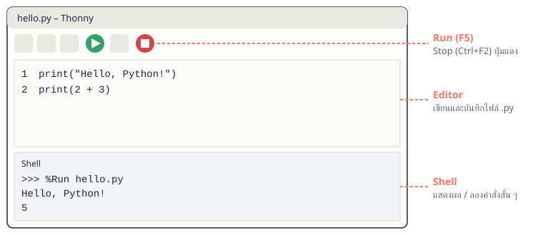

จบบทนี้แล้วทำได้เขียนโปรแกรมใน editor บันทึกเป็นไฟล์ .py รันดูผล และแก้ error ง่าย ๆ จากข้อความที่ Python แจ้ง
เนื้อหา
01.1 Python ทำงานอย่างไร
เราเขียนคำสั่งเป็นข้อความในไฟล์นามสกุล .py แล้วโปรแกรมชื่อ interpreter จะอ่านและทำตามคำสั่งทีละบรรทัด จากบนลงล่าง
print("Hello, Python!")
print("I am ready to learn.")
print(2 + 3)
Hello, Python!
I am ready to learn.
5
จำง่าย ๆ print() คือคำสั่งแสดงผล ข้อความต้องอยู่ในเครื่องหมายคำพูด แต่การคำนวณอย่าง 2 + 3 ไม่ต้องมี
01.2 เครื่องมือที่ใช้: Thonny
Thonny เป็น IDE ที่เหมาะกับผู้เริ่มต้น ติดตั้งครั้งเดียวได้ Python มาด้วย หน้าจอมี 2 ส่วนหลัก: Editor ด้านบนสำหรับเขียนและบันทึกไฟล์ และ Shell ด้านล่างสำหรับแสดงผล

หน้าจอ Thonny: ปุ่ม Run สีเขียวด้านบน, Editor สำหรับเขียนไฟล์ .py และ Shell ด้านล่างแสดงผลลัพธ์| ทำอะไร | กด |
|---|
| บันทึกไฟล์ | Ctrl + S |
| รันโปรแกรม | F5 หรือปุ่ม ▶ สีเขียว |
| หยุดโปรแกรมที่ค้าง | Ctrl + F2 หรือปุ่ม Stop สีแดง |
| เปิดไฟล์ใหม่ | Ctrl + N |
จำง่าย ๆ ดาวน์โหลดได้ที่ thonny.org เลือกเวอร์ชันที่มี Python มาให้ แล้วกด Next จนจบ
01.3 Shell กับไฟล์ .py ต่างกันอย่างไร
Shell เหมาะกับการลองคำสั่งสั้น ๆ พิมพ์แล้วเห็นผลทันที แต่ปิดโปรแกรมแล้วคำสั่งจะหายไป ส่วนไฟล์ .py เก็บโปรแกรมไว้รันซ้ำ แก้ไข และส่งงานได้
| Shell | ไฟล์ .py (Editor) |
|---|
| ใช้ทำอะไร | ลองคำสั่ง / เครื่องคิดเลข | เขียนโปรแกรมจริง |
| เก็บงานได้ไหม | ไม่ได้ | ได้ (กด Ctrl + S) |
พิมพ์ 2 + 3 เฉย ๆ | แสดง 5 ทันที | ไม่แสดงอะไร ต้องใช้ print(2 + 3) |
01.4 comment และการเยื้องบรรทัด
ข้อความหลัง # คือ comment ใช้อธิบายโค้ดให้คนอ่าน Python จะข้ามไป ส่วนการเยื้องบรรทัด (indent) มีความหมายใน Python ห้ามเว้นหน้าบรรทัดถ้าไม่จำเป็น และเมื่อต้องเยื้องให้ใช้ 4 ช่องเสมอ
# โปรแกรมแปลงนาทีเป็นชั่วโมง
total_minutes = 135
hours = total_minutes // 60 # หารแบบปัดเศษทิ้ง
minutes = total_minutes % 60 # เศษที่เหลือ
print(hours, "ชั่วโมง", minutes, "นาที")
2 ชั่วโมง 15 นาที
จำง่าย ๆ ตั้งชื่อไฟล์เป็นภาษาอังกฤษ ไม่มีเว้นวรรค และอย่าตั้งชื่อซ้ำกับโมดูลของ Python เช่น random.py หรือ math.py
01.5 อ่าน error ให้เป็น
เมื่อโปรแกรมผิด Python จะแสดงข้อความสีแดง ให้อ่านบรรทัดล่างสุดก่อน จะบอกชนิด error และใกล้ ๆ กันจะบอกเลขบรรทัด (line 3) ให้ไปแก้ที่บรรทัดนั้น
| Error | สาเหตุที่พบบ่อย | ตัวอย่าง |
|---|
SyntaxError | เขียนผิดรูปแบบ เช่น ลืมปิดวงเล็บหรือเครื่องหมายคำพูด | print("Hello) |
NameError | สะกดชื่อผิด หรือข้อความลืมใส่เครื่องหมายคำพูด | prnt("Hi"), print(Hello) |
IndentationError | เยื้องบรรทัดโดยไม่จำเป็น หรือเยื้องไม่เท่ากัน | print("Hi") ที่ต้นไฟล์ |
จำง่าย ๆ แก้ทีละจุดแล้วรันใหม่ ไม่ต้องลบทั้งโปรแกรมเขียนใหม่
ตัวอย่างโปรแกรม
ตัวอย่าง 01.1 · โปรแกรมแรก
สร้างไฟล์ hello.py แสดงข้อความและผลคำนวณ
Python source# hello.py
print("สวัสดี Python")
print("วันนี้เรียนบทที่ 1")
print("1 ชั่วโมงมี", 60 * 60, "วินาที")
Outputสวัสดี Python
วันนี้เรียนบทที่ 1
1 ชั่วโมงมี 3600 วินาที
อธิบาย- กด
Ctrl + N เปิดไฟล์ใหม่ พิมพ์โค้ด แล้วกด Ctrl + S บันทึกเป็น hello.py - กด
F5 ผลลัพธ์จะแสดงใน Shell ตามลำดับบรรทัด print() แสดงหลายค่าได้โดยคั่นด้วย , และ Python คำนวณ 60 * 60 ก่อนแสดงผล
ตัวอย่าง 01.2 · ป้ายชื่อวิชา
ใช้ comment อธิบายส่วนต่าง ๆ และใช้ print() จัดหน้าตาผลลัพธ์
Python source# ข้อมูลรายวิชา
course = "Python Programming"
credits = 3
# แสดงผล
print("=" * 30)
print("วิชา:", course)
print("หน่วยกิต:", credits)
print("=" * 30)
Output==============================
วิชา: Python Programming
หน่วยกิต: 3
==============================
อธิบาย- บรรทัดที่ขึ้นต้นด้วย
# ไม่ถูกรัน มีไว้ให้คนอ่าน "=" * 30 สร้างเส้นจากเครื่องหมาย = 30 ตัว- เก็บข้อมูลไว้ด้านบนทำให้แก้ค่าได้ที่เดียว (เรื่องตัวแปรจะเรียนละเอียดในบทที่ 2)
แบบฝึกหัดท้ายบท
เรียงจากง่ายไปยาก ลองเขียนเองให้ได้ output ตรงตัวอย่างก่อน แล้วค่อยเปิดเฉลย
ข้อ 01.1Hello, Python★ ง่าย
สร้างไฟล์ hello.py ใน Thonny ให้แสดงข้อความ 2 บรรทัด
เข้าใจโจทย์- โจทย์ให้
- ข้อความ
Hello, Python! และ My name is Nina. - ต้องหา
- ข้อความ 2 บรรทัดตามลำดับใน Shell
วิธีคิด
Ctrl + N เปิดไฟล์ใหม่- เขียน
print() 2 บรรทัด - บันทึกเป็น
hello.py แล้วกด F5
ตัวอย่างผลลัพธ์Hello, Python!
My name is Nina.
แนวคำตอบและเหตุผล
หนึ่ง print() แสดงหนึ่งบรรทัด การบันทึกเป็นไฟล์ทำให้กลับมารันซ้ำหรือส่งงานได้
print("Hello, Python!")
print("My name is Nina.")
ข้อ 01.2แนะนำตัว 3 บรรทัด★ ง่าย
แสดงชื่อ สาขา และชั้นปีของตัวเอง บรรทัดละ 1 ข้อมูล
เข้าใจโจทย์- โจทย์ให้
- ข้อมูลของตัวเอง (ตัวอย่าง: Arun, Computer Science, ปี 1)
- ต้องหา
- 3 บรรทัด ขึ้นต้นด้วย
Name:, Major:, Year:
วิธีคิด
- เขียน
print() 3 คำสั่ง - ชั้นปีเป็นตัวเลข ไม่ต้องมีเครื่องหมายคำพูดก็ได้
- รันแล้วตรวจลำดับบรรทัด
ตัวอย่างผลลัพธ์Name: Arun
Major: Computer Science
Year: 1
แนวคำตอบและเหตุผล
print("Year:", 1) แสดงข้อความและตัวเลขต่อกัน โดย Python เว้นวรรคระหว่างค่าให้อัตโนมัติ
print("Name: Arun")
print("Major: Computer Science")
print("Year:", 1)
ข้อ 01.3ทายผลก่อนรัน★★ ปานกลาง
ก่อนรันโค้ด print("5 + 7") และ print(5 + 7) ให้เขียนคำตอบที่คิดว่าจะได้ แล้วรันเพื่อตรวจ
เข้าใจโจทย์- โจทย์ให้
- โค้ด 2 บรรทัด ต่างกันแค่เครื่องหมายคำพูด
- ต้องหา
- อธิบายได้ว่าทำไมผลต่างกัน
วิธีคิด
- ทายผลแต่ละบรรทัดก่อน
- รันแล้วเทียบกับที่ทาย
- สังเกตว่าเครื่องหมายคำพูดเปลี่ยนความหมายอย่างไร
แนวคำตอบและเหตุผล
ในเครื่องหมายคำพูดคือข้อความ จึงแสดงตามที่เขียน 5 + 7 ส่วนที่ไม่มีเครื่องหมายคำพูดคือการคำนวณ จึงได้ 12
print("5 + 7")
print(5 + 7)
ข้อ 01.4แก้ SyntaxError★★ ปานกลาง
โค้ด print("Open the file) รันแล้วเกิด error ให้หาจุดผิดแล้วแก้
เข้าใจโจทย์- โจทย์ให้
- โค้ดที่ขาดเครื่องหมายคำพูดปิด
- ต้องหา
- แสดง
Open the file ได้ไม่มี error
วิธีคิด
- รันแล้วอ่านบรรทัดล่างสุด:
SyntaxError: unterminated string literal - ดูเลขบรรทัดที่ error แจ้ง
- เติม
" ปิดข้อความก่อน )
ตัวอย่างผลลัพธ์Open the file
แนวคำตอบและเหตุผล
ข้อความต้องเปิดและปิดด้วยเครื่องหมายคำพูดคู่เดียวกัน unterminated string แปลว่าข้อความไม่ถูกปิด
print("Open the file")
ข้อ 01.5แก้ NameError★★ ปานกลาง
โค้ด prnt("Welcome") และ print(Thonny) มี error 2 จุด ให้แก้ทั้งสองจุด
เข้าใจโจทย์- โจทย์ให้
- โค้ด 2 บรรทัดที่มีชื่อผิด
- ต้องหา
- แสดง
Welcome และ Thonny
วิธีคิด
- แก้ทีละบรรทัด รันใหม่ทุกครั้ง
- บรรทัดแรก: สะกด
print ผิด - บรรทัดสอง:
Thonny เป็นข้อความ ต้องใส่เครื่องหมายคำพูด
ตัวอย่างผลลัพธ์Welcome
Thonny
แนวคำตอบและเหตุผล
NameError แปลว่า Python ไม่รู้จักชื่อนั้น อาจเป็นเพราะสะกดคำสั่งผิด หรือลืมใส่เครื่องหมายคำพูดให้ข้อความ
print("Welcome")
print("Thonny")
ข้อ 01.6เครื่องคิดเลขค่าเทอม★★★ ท้าทาย
ค่าหน่วยกิตละ 1,200 บาท ลงเรียน 18 หน่วยกิต และค่าบำรุง 3,500 บาท ให้แสดงยอดค่าเทอมรวม พร้อม comment อธิบายสูตร
เข้าใจโจทย์- โจทย์ให้
- ค่าหน่วยกิต 1200, จำนวน 18 หน่วยกิต, ค่าบำรุง 3500
- ต้องหา
ค่าเทอมรวม 25100 บาท
วิธีคิด
- เขียน comment บอกว่าโปรแกรมทำอะไร
- คำนวณ
1200 * 18 + 3500 ใน print() - ลองทดในใจก่อนว่าได้เท่าไร แล้วเทียบผล
ตัวอย่างผลลัพธ์ค่าเทอมรวม 25100 บาท
แนวคำตอบและเหตุผล
Python คำนวณคูณก่อนบวกเหมือนคณิตศาสตร์ comment ช่วยให้คนอ่านรู้ที่มาของตัวเลข
# คำนวณค่าเทอม: ค่าหน่วยกิต x จำนวนหน่วยกิต + ค่าบำรุง
print("ค่าเทอมรวม", 1200 * 18 + 3500, "บาท")